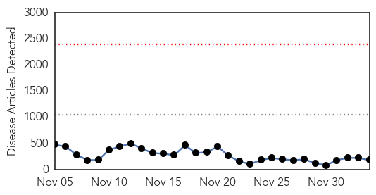
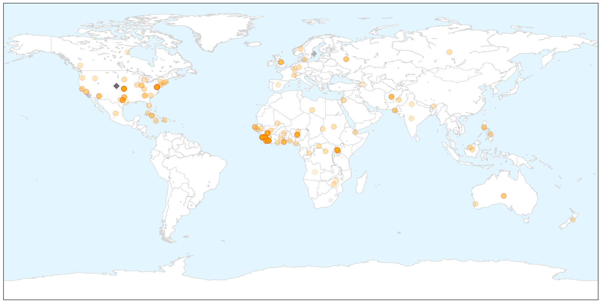
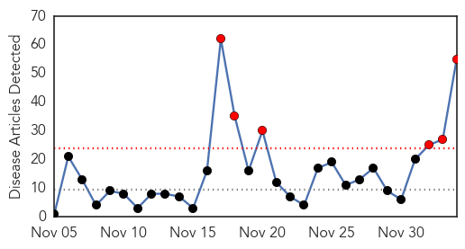

Ebola
30-Day Web Trend
0 alerts, 0 warnings

30-Day Twitter Trend
0 alerts, 0 warnings

Article Locations

X

Article Confidences

Top Articles:
- 1.000
- MSF warns Liberia Ebola 'progress' could be illusory
- 1.000
- Latest Ebola News: Did WHO delay identifying Ebola outbreak?
- 1.000
- Ebola in Sierra Leone: 11th doctor gets Ebola infection
- 1.000
- Dangerous practices spread Ebola in Sierra Leone
- 1.000
- The politics of the Ebola crisis in West Africa
- 1.000
- American Healthcare Worker Admitted In Atlanta Hospital For Ebola Testing After Being Evacuated From West Africa (VIDEO)
- 1.000
- Ebola Scare: Panic at International Ports Of Entry
- 1.000
- Dangerous practices spread Ebola in Sierra Leone
- 1.000
- American doctor feared to have Ebola to be flown home from West Africa
- 1.000
- All clear for suspected WA Ebola patient
- 1.000
- All clear for suspected WA Ebola patient
- 1.000
- What are your chances of getting Ebola?
- 1.000
- Dangerous practices spread Ebola in Sierra Leone: Dr Michael Mawanda
- 1.000
- Atlanta Hospital to Test US Health Worker for Ebola
- 1.000
- Dangerous practices spread Ebola in Sierra Leone
- 1.000
- Ebola thrives on the scraps of war and blight
- 1.000
- Three Nonprofits Fighting Ebola
- 1.000
- In Brussels, Unlikely Ebola Boot Camp Arises
- 0.999
- U.S. is weighing more aid to fight Ebola in Sierra Leone
- 0.999
- Ebola Free-for-All Could Trigger Bad Science and Wasted Efforts
- 0.999
- Dangerous practices spread Ebola in Sierra Leone
- 0.999
- American Being Monitored for Symptoms at Atlanta, Georgia Hospital
- 0.999
- Responding to West-African Employees who Travel to Ebola-Affected Countries - Employee Rights vs. Public Health Concerns
- 0.999
- Groups report early safety data, progress on Ebola vaccines
- 0.999
- American Nurse Possibly Exposed to Ebola Arrives at Atlanta Hospital
- 0.999
- WHO 'wasted precious time' over Ebola
- 0.999
- Dangerous practices spread Ebola in Sierra Leone
- 0.999
- Cooler box-equipped motorbikes donated to UN will speed up Ebola testing process in West Africa - Liberia
- 0.998
- Imperialism and the Ebola epidemic
- 0.998
- US health care worker in WAfrica brought home for Ebola tests
- 0.998
- Cooler box-equipped motorbikes donated to UN will speed up Ebola testing process in West Africa
- 0.998
- US health care worker in WAfrica brought home for Ebola tests
- 0.998
- Healthcare Worker under Observation for Ebola in Atlanta
- 0.998
- Volunteering in 'red zone' of West Africa's Ebola crisis
- 0.998
- Ebola is tricky to understand and combat, expert says
- 0.998
- US health care worker in West Africa brought home for Ebola tests
- 0.998
- #Ebola: US health worker flown home
- 0.998
- UN envoy appeals to Liberians to remain vigilant, sustain response
- 0.997
- An Anarchist Response to Ebola
- 0.997
- 11th Sierra Leonean doctor infected with Ebola
- 0.997
- Threat of Ebola spreading in Russia low, says minister
- 0.997
- US patient arrives in Atlanta for Ebola tests
- 0.996
- Knoxville doctor looking for participants to test Ebola vaccine
- 0.996
- Three U.S. Hospitals Designated as Ebola Treatment Centers Protected by Ebola-Killing Robot... -- MEMPHIS, Tenn., Dec. 4, 2014 /PRNewswire/ --
- 0.996
- President’s Visit to NIH Highlights Research on Ebola
- 0.996
- Senator Durbin Applauds Chicago Nurse Treating Ebola Patients In Liberia Durbin Holiday Season
- 0.996
- Five Duke faculty receive approval to travel to Liberia
- 0.995
- Threat of Ebola spreading in Russia low, says minister
- 0.995
- Another American to be evaluated for Ebola in U.S.
- 0.995
- Bigger concern than Ebola in South Dakota? Influenza
Showing top 50 articles...
Top Tweets:
- 0.685
- RT: The likelihood of a pet being exposed to the Ebola virus through contact with infected persons in Europe is very low http://t…
- 0.646
- RT: SierraLeone records 93 new confirmed Ebola cases today with Freetown and environs getting 75. No cases in the... http:/…
- 0.607
- Post Thanksgiving thankfulness: The Ebola situation cld have been a lot worse now. I had thought it likely that it wld be.I'm glad it's not.
- 0.537
- RT: Interview with me on working in the Ministry of Health in Liberia with the Ebola responce in Liberia http://t.co/ONj0fmuO…
- 0.515
- While international efforts were essential let's not forget that the people of Liberia themselves slowed down Ebola.
- 0.506
- opens First Aid Post in Sierra Leone to screen patients & prevent people from being exposed to Ebola! http://t.co/DkNh4NzBGO
Influenza
30-Day Web Trend
6 alerts, 0 warnings

30-Day Twitter Trend
0 alerts, 0 warnings

Article Locations

Article Confidences
Top Articles:
- 1.000
- U.S. says flu shots may not be good match for 2014-15 virus
- 1.000
- CDC: Flu vaccine may not be good match for most common flu strain
- 1.000
- Flu shot may offer less protection this winter
- 1.000
- US CDC says flu shots may not be good match for 2014-15 virus — Health — Bangor Daily News — BDN Maine
- 0.999
- This flu season may be a bad one, CDC warns
- 0.999
- Prepare for a bad flu season by getting vaccinated, officials urge
- 0.998
- Flu Virus Mutation May Weaken Effectiveness Of Current Vaccine
- 0.998
- CDC warns that the flu season may be a bad one
- 0.998
- How the flu vaccine turned out to be a poor match for this year's flu
- 0.998
- CDC advises doctors not to delay antiviral flu treatments
- 0.998
- Flu shot may not be enough to keep you from getting sick, CDC says; agency urges use of antiviral drugs if needed
- 0.998
- Widespread flu outbreak hits Louisiana; vaccine not quite as effective
- 0.997
- More severe flu season possible
- 0.997
- Flu vaccine may be less effective this winter; Tampa Bay reports mild to moderate flu
- 0.997
- CDC says it is too late to make new flu vaccine for this season
- 0.997
- This year’s flu shot may not be the right match, CDC tells doctors - National
- 0.996
- CDC says it is too late to make new flu vaccine for this season
- 0.996
- Health department reports sharp increase in Pueblo County flu cases
- 0.996
- Flu vaccine may be less effective this winter
- 0.995
- CDC Says It's Too Reformulate
- 0.995
- CDC Says It's Too Reformulate
- 0.994
- Flu vaccines might not be as effective against virus
- 0.992
- U.S. health officials say this season's flu vaccine not as powerful
- 0.991
- Japan’s health authorities issue the earliest flu epidemic alert since 2007
- 0.990
- CDC issues flu warning - Story
- 0.990
- Flu case confirmed in Coconino County
- 0.988
- Flu vaccine this year not effective against deadly strain, CDC warns
- 0.984
- Two new flu-related deaths reported in NC :: WRAL.com
- 0.984
- CDC: Flu vaccine may not work as well this year
- 0.983
- CDC: Current Flu Shot Less Effective Due to Virus Mutation
- 0.981
- Flu virus mutations mean your shot may not be worth much this year
- 0.976
- CDC: Flu strain doesn't match this year's vaccine
- 0.945
- Avian influenza confirmed at third and fourth farms in Abbotsford and Chilliwack
- 0.941
- CDC Warns Flu Vaccine Might Not Protect Against Mutated Strain
- 0.925
- CDC says flu vaccine not as effective this year
- 0.924
- Drugs agency clears flu jab in Italy scare
- 0.923
- Avian flu outbreak hits 2 British Columbia farms
- 0.921
- Watchdog clears Novartis in flu jab scare
- 0.889
- One in Five Superspreaders Trigger Majority of Viral Infections
- 0.878
- WTVM.com-Columbus, GA News Weather & Sports
- 0.878
- CDC: Flu shot less effective in 2014
- 0.878
- CDC: Flu shot less effective in 2014
- 0.875
- Avian influenza in Fraser Valley confirmed as H5N2 virus
- 0.857
- Avian flu confirmed at four Fraser Valley farms after testing
- 0.827
- UPDATE 1-Canada bird flu virus identified as 'highly pathogenic' strain
- 0.810
- Avian Flu is Back in Asia and Canada
- 0.792
- UPDATE: Culling of avian flu chickens at Chilliwack farm began Friday
- 0.768
- UPDATE: Virulent strain of bird flu found on fifth Fraser Valley farm
- 0.723
- Canada bird flu virus identified as 'highly pathogenic' strain
- 0.665
- Canada bird flu virus identified as 'highly pathogenic' strain
Showing top 50 articles...
Top Tweets:
-
No tweets found for Dec 04, 2014